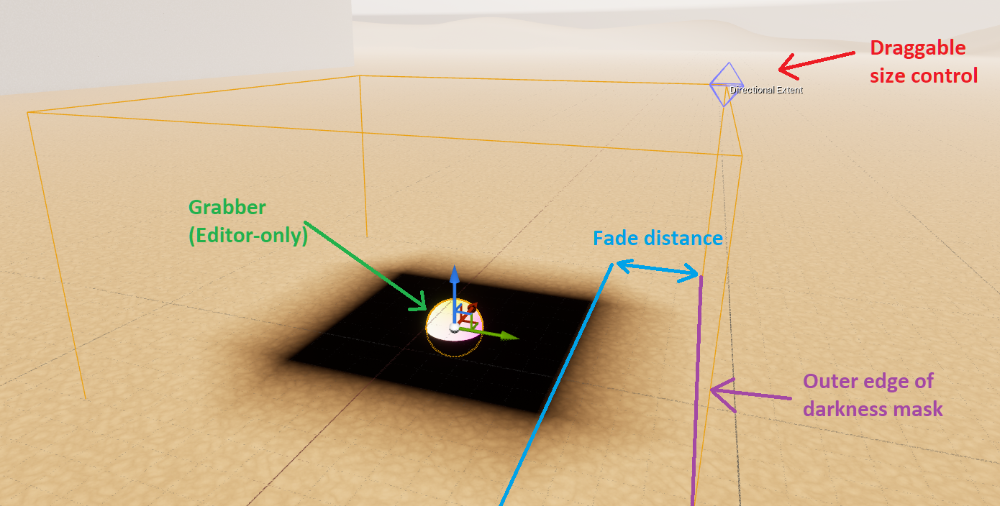
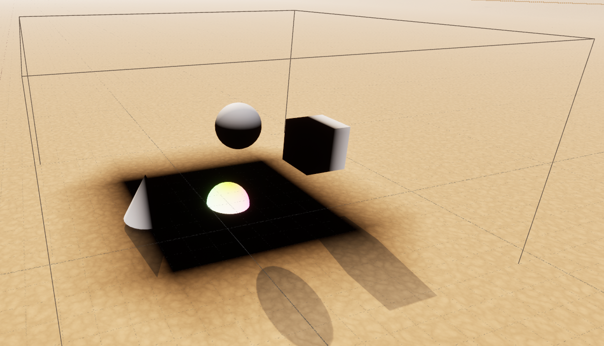
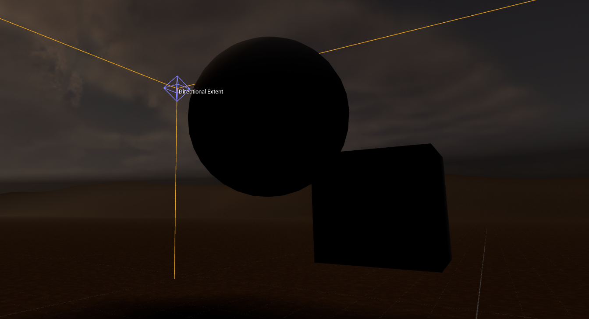
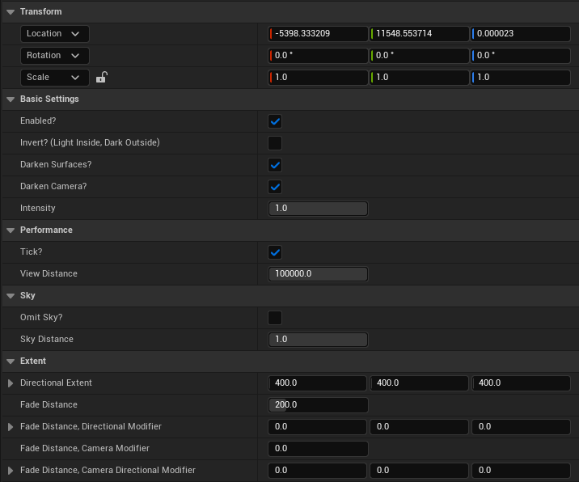
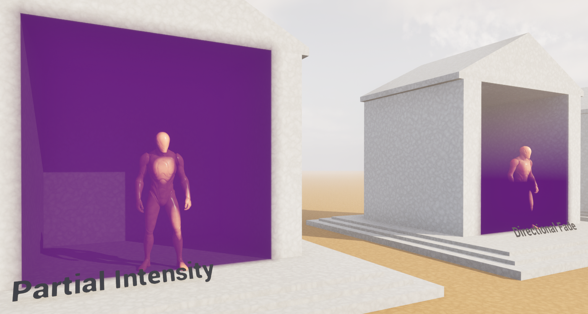
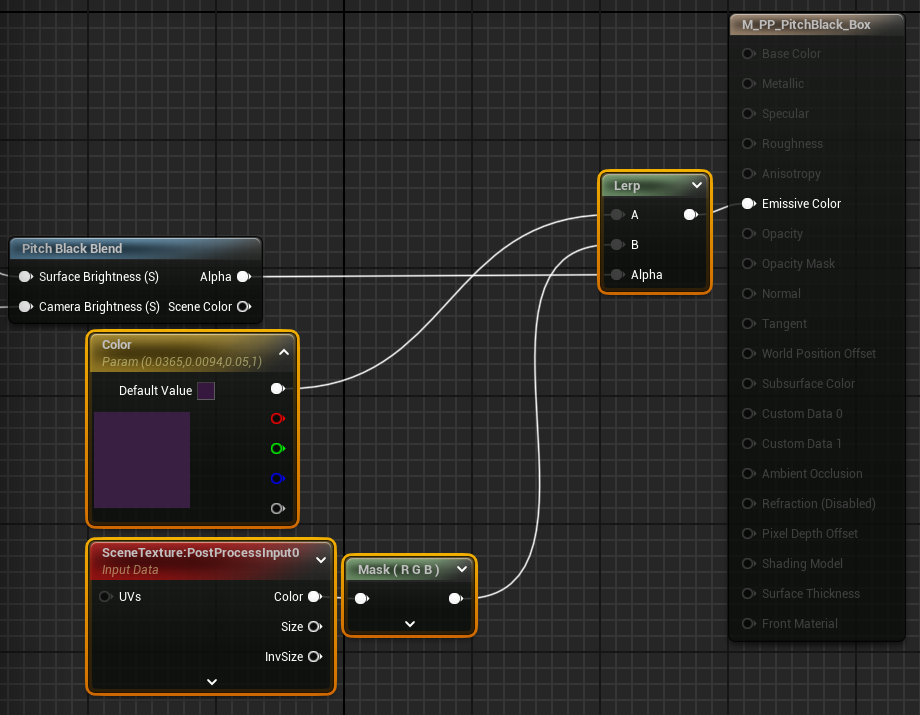
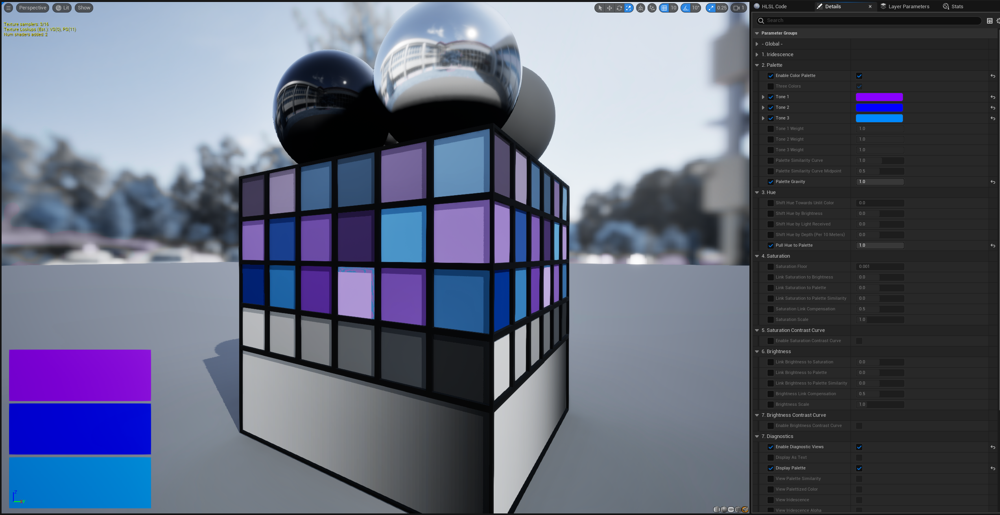
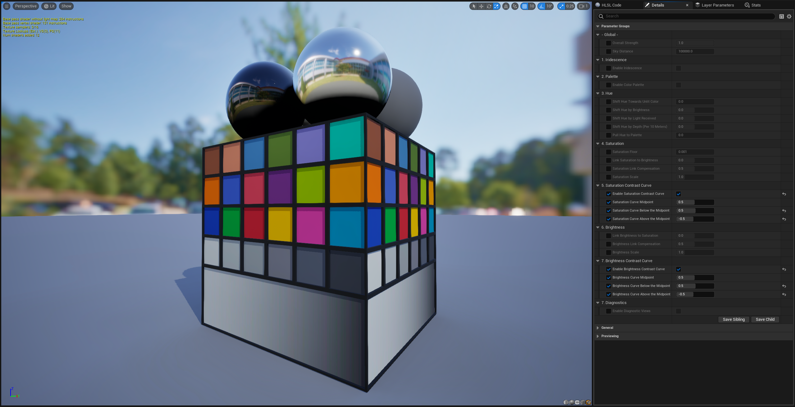
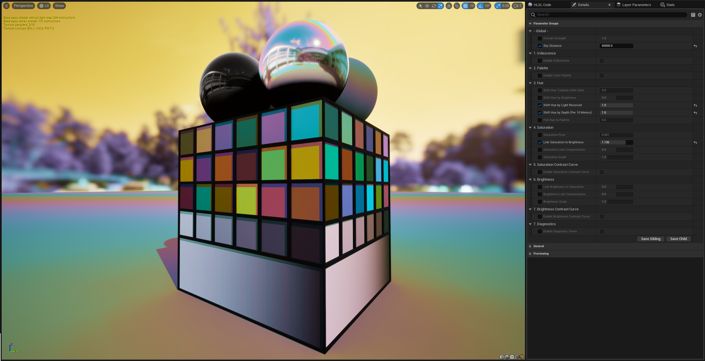
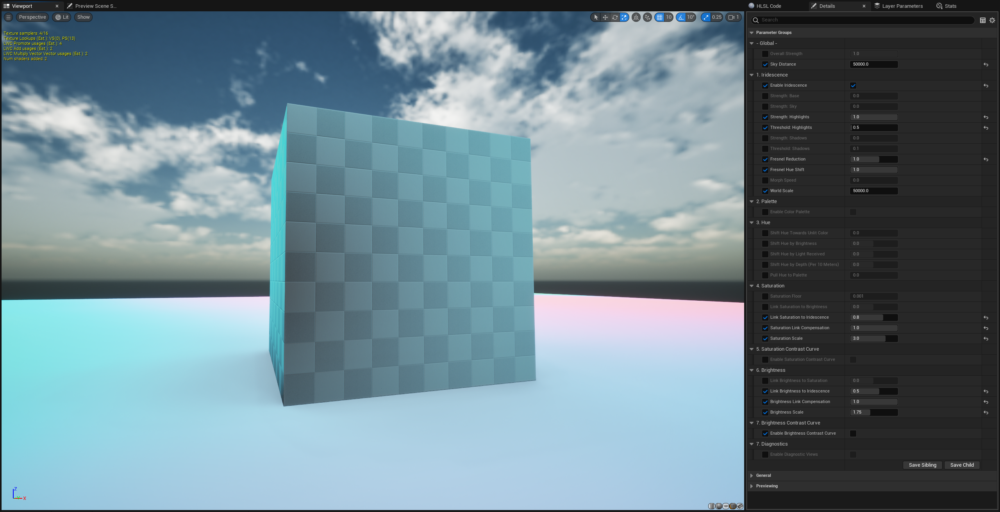

Unreal Engine Visual Effects
By Dan Gant
PITCH BLACK
Volumetric Shadows
PITCH BLACK lets you add darkness to your environments with precise controls. Place PITCH BLACK actors in pits, corners, caves, and holes to cover them in absolute shadow. No light is powerful enough to overcome it.
PITCH BLACK works with all types of lighting. It works at all graphics levels, unlike volumetric materials. It can darken unlit materials as well.
Getting started
Use the Epic Games Launcher to add the PITCH BLACK asset pack to your Unreal Engine project.
Try the Showcase level
The Showcase level demonstrates some of the effects you can achieve with PITCH BLACK.
To see it, open your project. Browse to Content/PitchBlack/Levels and open the Showcase level. Play this level in your editor.
The Dark level gives you a character with PITCH BLACK attached to the camera, silhouetting distant elements against the night sky.
Add PITCH BLACK to your environment
In your level editor, open your Content Drawer. Go to Content/PitchBlack/Blueprints and drag a BP_PitchBlack_Box onto your scene.
Create some meshes and drag them inside to see PITCH BLACK’s effect on surfaces:
Pan your camera inside to see PITCH BLACK’s effect on the camera:
Click on the colored sphere in the middle to select the PITCH BLACK actor.
Look at the Details panel to change its settings:
Settings
Basic Settings
Enabled?
Enables or disables PITCH BLACK’s visual effects.
Invert? (Light inside, dark outside)
- Disabled: PITCH BLACK darkens inside its extents
- Enabled: PITCH BLACK darkens outside its extents
Darken Surfaces?
Toggles the surface-darkening behavior.
Darken Camera?
Toggles the camera-darkening behavior.
Intensity
Controls how much PITCH BLACK darkens the affected area.
- 0: PITCH BLACK has no effect
- 1: PITCH BLACK fades to absolute darkness
Extents
You can shape PITCH BLACK using Unreal’s actor transforms. Those transformations will applied on top of the following settings:
Total Extent
The maximum reach of PITCH BLACK’s effect outwards from its center.
Fade Distance
A flat distance inwards from the edge over which the surface darkening fades from minimum to maximum intensity.
Fade Distance, Directional Modifier
A per-axis distance inwards from the edge over which the surface darkening fades from minimum to maximum intensity.
Fade Distance, Camera Modifier
A flat distance, added to the fade distance, over which the camera darkening fades from minimum to maximum intensity.
Fade Distance, Camera Directional Modifier
A flat distance, added to the fade distance, over which the camera darkening fades from minimum to maximum intensity.
Sky
By default, when using inverted mode, PITCH BLACK will darken the sky. You can disable sky darkening to achieve a silhouetted look. The “Dark” level demonstrates this.
Omit Sky?
Avoid darkening extremely distant surfaces.
Sky Distance
The distance beyond which to avoid darkening surfaces.
Performance
Tick?
By default, PITCH BLACK updates each frame to apply any changes you’ve made to its transform or settings. If you don’t plan to make any changes, set this to false to reduce CPU usage.
View Distance
Each instance of PITCH BLACK has its own post process volume. Each one within the view distance incurs some GPU usage. Reduce this distance to avoid rendering PITCH BLACK in places it’s not required.
Limitations
Translucency
Translucent materials behave unintuitively with PITCH BLACK. The Showcase level demonstrates this.
The two material properties which affect how they interact with PITCH BLACK are:
- “Output Depth and Velocity”
- Translucency Pass, either “Before DOF” or “After DOF”/”After Motion Blur”
Translucent materials with “Output Depth and Velocity” enabled will receive darkness if inside the mask. But they pick up undarkened light from undarkened faces of those materials will also transmit light from surfaces behind them that would otherwise be darkened.
- Before DOF: Receive full darkness. This is a good default setting.
- After DOF: Receive only partial darkness.
Translucent materials with “Output Depth and Velocity” disabled allow opaque surfaces behind them to receive correct darkness.
- Before DOF: Receive darkness based on the location of the next opaque surface
- After DOF: Receive no darkness.
Reflection
PITCH BLACK darkens surfaces after Unreal calculates reflections, so darkened surfaces will appear undarkened in reflections.
Extending PITCH BLACK
You can use PITCH BLACK as a base for building visual effects that use ellipsoid or box masks. PITCH BLACK’s material functions emit a 0-1 value which indicate how strongly the effect applies to the current screen pixel.
Using a different color
Open the material of your choice (M_PP_PitchBlack_Box or M_PP_PitchBlack_Ellipsoid). Add these highlighted nodes at the end:
CHROMIA
Exotic Stylized Color Grading
CHROMIA remaps your scene's colors to create unique styles. Design bold, opinionated looks that make your creations stand out.
Features
Tricolor Palettizer
Choose a tricolor visual identity and shape your image around it. Shift colors towards your palette, or emphasize colors that already match it.
Smart Color Curves
Make sweeping changes to your hue, saturation, and brightness, while preserving the maximum dynamic range of those values. CHROMIA uses the Oklab perceptual color space to create smooth color gradients you won't get elsewhere.
Exotic color correlations
Modulate your colors in ways you never thought possible. Give an iridescent glow to your shiniest surfaces, or make creeping polychrome shadows. CHROMIA's smart curves will make your craziest ideas look great.
 HDR visual identity
Unreal only applies in LUTs Standard Dynamic Range, reducing your color depth. CHROMIA grades High Dynamic Range colors, preserving details for you.
Plays nicely with Unreal's color grading
You don't have to give up anything to use CHROMIA! You can still use Unreal's color grading tools if you want. CHROMIA applies its changes first, and you can fine-tune them in your post process settings.
Getting started
Use the Epic Games Launcher to add the CHROMIA asset pack to your Unreal Engine project.
Try the Showcase level
The Showcase level lets you try out CHROMIA's presets.
To see it, open your project. Browse to Content/ChromiaColorGrader/Showcase/ and open the Overview level. Play this level in your editor. Press HOME, END, or 0-9 to cycle through presets.
Add CHROMIA to your level
CHROMIA is a post process material. Here's how to add CHROMIA (or any other post process material) to your level:
Open your level. Create a Post Process Volume actor. Enable "Infinite Extent (Unbound)". Under "Rendering Features" look for "Post Process Materials". Click "(+) Add Element". Click on "Choose" and select "Asset Reference". This creates a slot labeled "Choose" where you'll drag a CHROMIA preset in the next step.
In your Content Browser, open Content/ChromiaColorGrader/Presets. Drag one of the Material Instances into your Post Process Volume's list of post process materials. You should now see the CHROMIA preset transforming the appearance of your level.
Customize CHROMIA
To start designing your own CHROMIA look, create a new Material Instance in Unreal's Content Browser. Open it, and set its Parent to Content/ChromiaColorGrader/M_CHROMIA. Drag your Material Instance into the Post Process Volume material array (like in the step above).
Your scene should look the same as it did before. CHROMIA's default settings leave your image unchanged. Now we can start creating a visual style.
Create a tricolor palette
In your Material Instance, look for "Enable Color Palette". Click the checkbox on the left to allow your instance to override this setting. Then click the checkbox on the right to enable the color palette.
Enabling the color palette introduces settings for your tricolor palette. Mouse over them to read what they do.
Let's play with the default palette, defined by Tone 1, 2, and 3. Override the "Pull Hue to Palette" setting in the "3. Hue" category. Slide it towards 1.0. Watch the colors in your scene gradually adopt the palette colors.
You can define your own palette by modifying Tone 1, 2, and 3. If you want to use fewer colors, you can disable "Three Colors" to go to a two- or one-color palette. You can adjust the weights of each tone, which let you emphasize one over another.
Some other settings that use the palette include:
- "Link Saturation to Palette" which lets you adjust match the saturation of tones in your palette.
- "Link Saturation to Palette Similarity" which lets you selectively desaturate colors outside your palette.
- "Link Brightness to Palette" and "Link Brightness to Palette Similarity" do the same for brightness.
Apply curves to saturation or brightness
Override and enable "Enable Saturation Contrast Curve". This introduces some new settings.
Set "Saturation Curve Below the Midpoint" to 1.0. This will boost saturation of your less-saturated colors, while preserving a large dynamic range of saturation. Negative values pull saturation towards zero.
Try adjusting the "Saturation Curve Midpoint" to higher and lower values. This is the saturation level you lifted your colors towards in the previous step. At 1.0, your saturation values will be increased everywhere.
Experiment with "Saturation Curve Above the Midpoint". Negative values will pull saturation values back towards your midpoint. Positive values will exaggerate the saturation of your already-saturated colors.
Lastly, enable "Enable Brightness Contrast Curve" and experiment with the brightness curve. You can use these to adjust contrast dramatically, while preserving the relative brightness of pixels.
Add Iridescence
Override and enable "Enable Iridescence" and see the new options it introduces.
Set "Strength: Highlights" to 1.0. This will apply an iridescent sheen to your brightest pixels. If your scene is dark, you may not see much effect. Reduce "Threshold: Highlights" to extend the brightness range of the iridescent effect.
If you have an outdoor scene, turn "Strength: Sky" up to 1.0. This will produce a rainbow gradient across the sky emanating from your primary directional light.
Adjust "Fresnel Reduction" between negative and positive values to see the iridescence apply most strongly to surfaces angled towards, or away, from the camera.
Lastly, boost "Link Brightness to Iridescence" to 1.0" and "Brightness Scale" to 2.0 to watch your iridescent surfaces shine extra-bright.